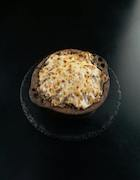

καλώς ήρθες στο Froso's!
Welcome to Froso's!
An authentic Greek Restaurant to fufill most of your hearts desires.
πάμε!
Appetizers
Saganaki
Flaming Graviera cheese drenched in fresh lemon juice and Bourbon.
Cheese and Olive plate

Imported Kalamta Olives with Feta, Bijou aged Goat Cheese, Kerrygold aged Cheddar, and Parmigiano Reggiano.
Entrees
Lamb Gyro
The signiture dish of Greece, our Lamb Gyro's are made with spit-roasted Lamb leg, fresh tomatoes, lettuce, onions, topped with our famous Tzatziki.
Pastitsio
This baked pasta dish is made from ground Lamb, tomatoes, bucatini, and a Greek bechamel cheese sauce.
Dessert
Baklava
A sweet and flakey dessert, our Baklava is made with layered pecans and Phyllo covered in butter, drenched in a lemon, orange, cinnamon and honey syrup.
Galaktoboureko
Our signiture dessert, Galaktoboureko is a smooth, creamy custard baked in phyllo and covered in a light, sweet syrup.
Drinks
Coffee
Smooth and rich Greek coffee, made from boiling coffee and sugar three times in order to get the perfect cup of coffee.
Lemonade
Our In-house made Lemonade is a rich blend of sweet and zesty, made from locally sourced Lemons.
Metaxa
A rich bevarage imported directly from the shores of Greece, this 12 year aged spirit pairs perfectly with any Greek dish.
Ouzo
Made in Cypris, this traditional Greek spirit is the perfect end-of-night drink best paired with our homemade Baklava.
Water
Our award winning water is our most requested beverage. This thirst-quenching drink goes perfectly with any meal at all times of the day.